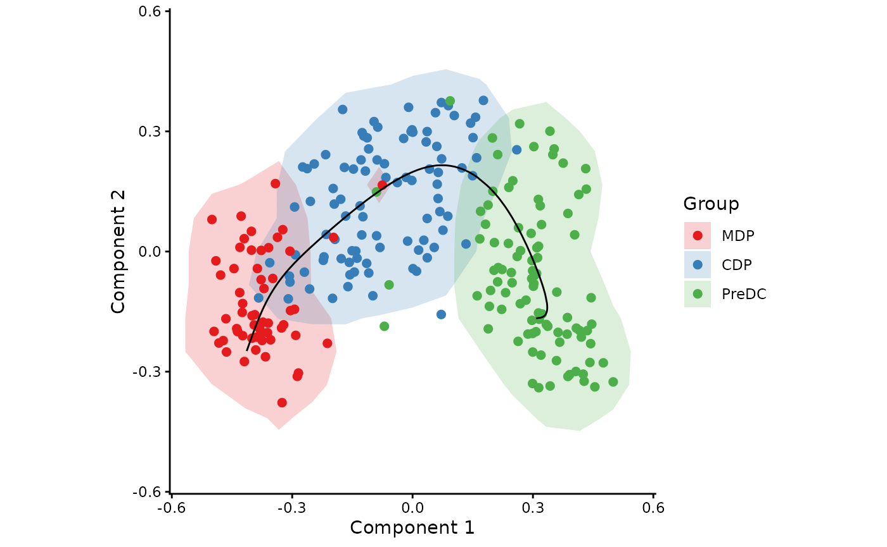
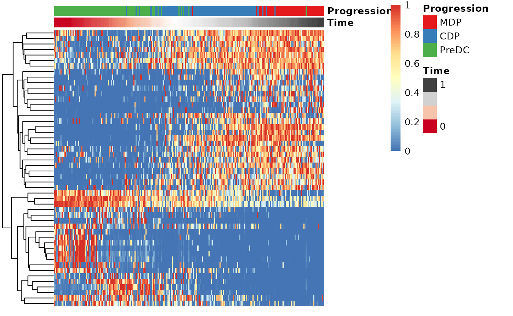
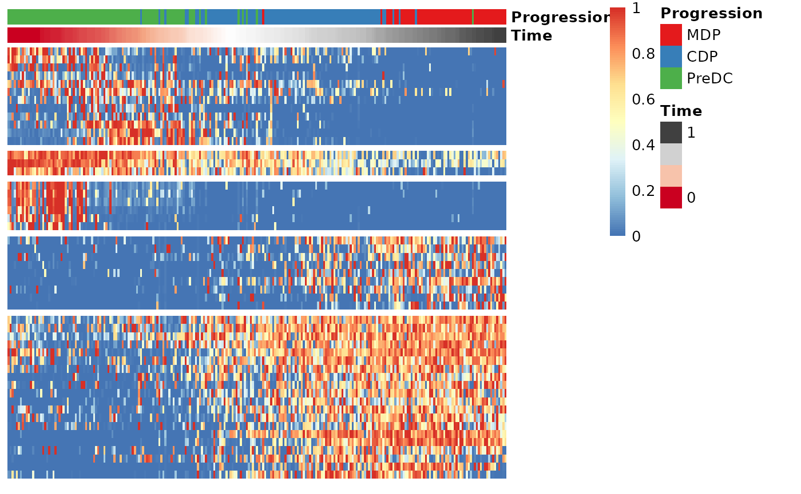

Running SCORPIUS on a Seurat object
Robrecht Cannoodt
2019-01-12
Source:vignettes/seurat.Rmd
seurat.RmdThis vignette assumes that you have a Seurat object at the ready. As
an example, we create one from the ginhoux dataset
containing 248 dendritic cell progenitors.
library(SCORPIUS)
library(Seurat)
library(Matrix)
data(ginhoux)
counts <- t(round(2^ginhoux$expression))
srt <- CreateSeuratObject(counts = counts, meta.data = ginhoux$sample_info)## Warning: Data is of class matrix. Coercing to dgCMatrix.Normalise with Seurat
Seurat is used to normalise the dataset. Since the dimensionality reduction method is scale-invariant, the scaling step in Seurat is not required.
srt <- NormalizeData(srt)## Normalizing layer: countsFetch the expression data from the Seurat object as follows.
Also fetch some metadata from the Seurat object. Change
group_name to whatever column in srt@meta.data
you are interested in.
group_name <- srt@meta.data$group_name Reduce dimensionality of the dataset
SCORPIUS uses Torgerson multi-dimensional scaling to reduce the dataset to three dimensions. This technique attempts to place the cells in a space such that the distance between any two points in that space approximates the original distance between the two cells as well as possible.
The distance between any two samples is defined as their correlation
distance, namely 1 - (cor(x, y)+1)/2. The reduced space is
constructed as follows:
space <- reduce_dimensionality(expression, dist = "spearman", ndim = 3)The new space is a matrix that can be visualised with or without colouring of the different cell types.
draw_trajectory_plot(space, progression_group = group_name, contour = TRUE)## Warning: `aes_string()` was deprecated in ggplot2 3.0.0.
## ℹ Please use tidy evaluation idioms with `aes()`.
## ℹ See also `vignette("ggplot2-in-packages")` for more information.
## ℹ The deprecated feature was likely used in the SCORPIUS package.
## Please report the issue at <https://github.com/rcannood/SCORPIUS/issues>.
## This warning is displayed once every 8 hours.
## Call `lifecycle::last_lifecycle_warnings()` to see where this warning was
## generated.Inferring a trajectory through the cells
The main goal of SCORPIUS is to infer a trajectory through the cells, and orden the cells according to the inferred timeline.
SCORPIUS infers a trajectory through several intermediate steps, which are all executed as follows:
traj <- infer_trajectory(space)The result is a list containing the final trajectory
path and the inferred timeline for each sample
time.
The trajectory can be visualised with respect to the samples by
passing it to draw_trajectory_plot:
draw_trajectory_plot(
space,
progression_group = group_name,
path = traj$path,
contour = TRUE
)## Warning: Using `size` aesthetic for lines was deprecated in ggplot2 3.4.0.
## ℹ Please use `linewidth` instead.
## ℹ The deprecated feature was likely used in the SCORPIUS package.
## Please report the issue at <https://github.com/rcannood/SCORPIUS/issues>.
## This warning is displayed once every 8 hours.
## Call `lifecycle::last_lifecycle_warnings()` to see where this warning was
## generated.
Finding candidate marker genes
We search for genes whose expression is seems to be a function of the trajectory timeline that was inferred, as such genes might be good candidate marker genes for dendritic cell maturation.
Note: this will only work for sufficiently small expression matrices!s
expression <- as.matrix(expression)
gimp <- gene_importances(expression, traj$time, num_permutations = 0, num_threads = 8)
gene_sel <- gimp[1:50,]
expr_sel <- expression[,gene_sel$gene]To visualise the expression of the selected genes, use the
draw_trajectory_heatmap function.
draw_trajectory_heatmap(expr_sel, traj$time, group_name)
Finally, these genes can also be grouped into modules as follows:
modules <- extract_modules(scale_quantile(expr_sel), traj$time, verbose = FALSE)
draw_trajectory_heatmap(expr_sel, traj$time, group_name, modules)